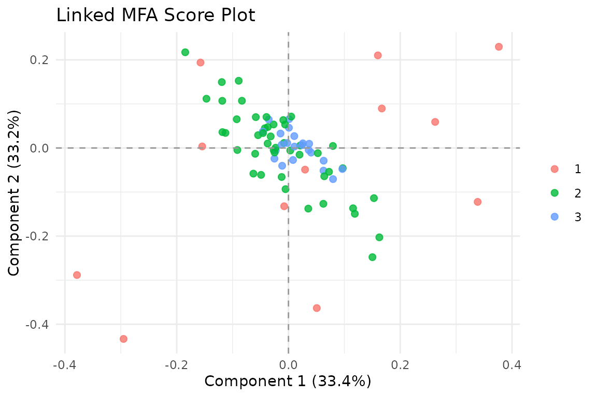
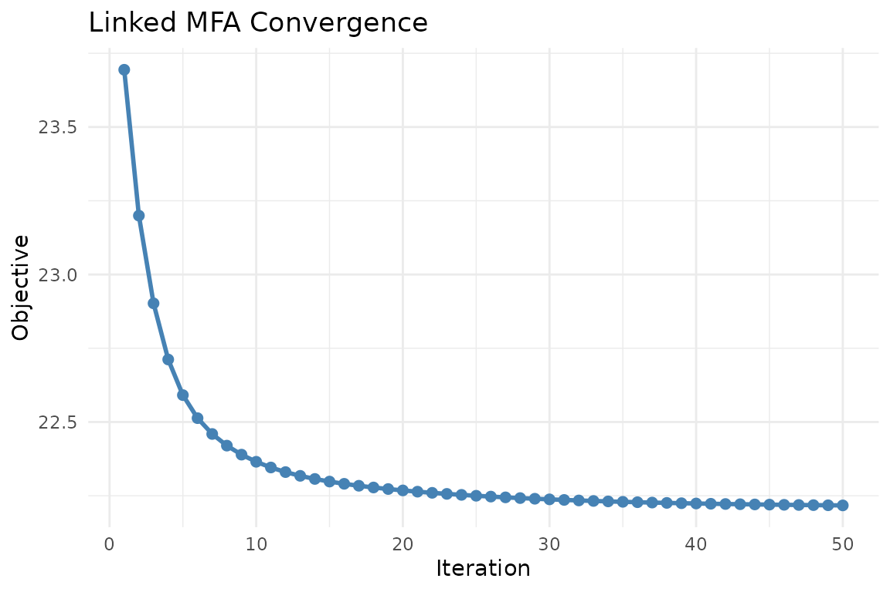
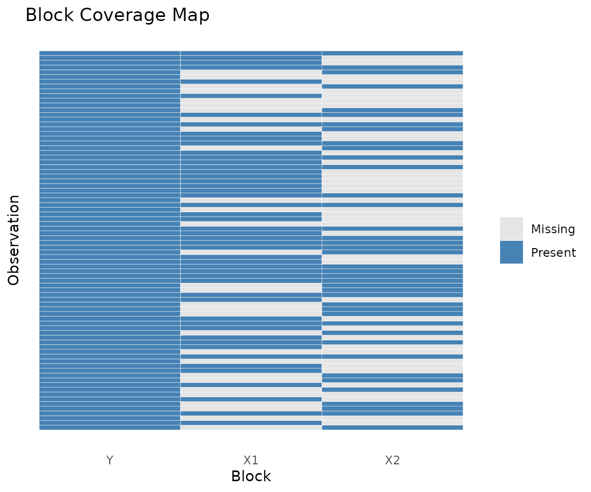
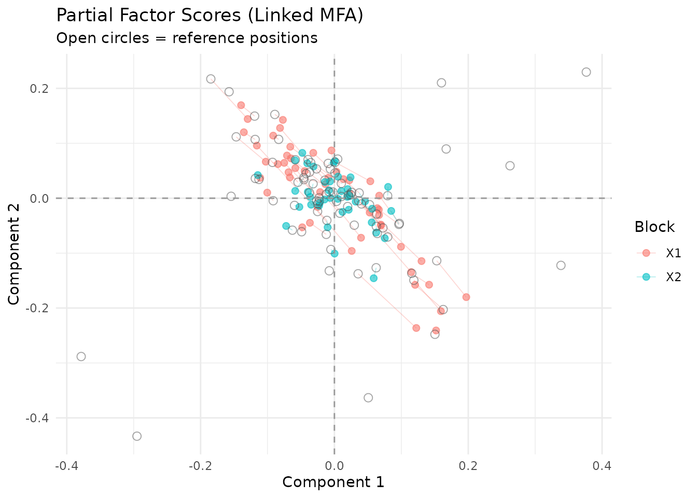
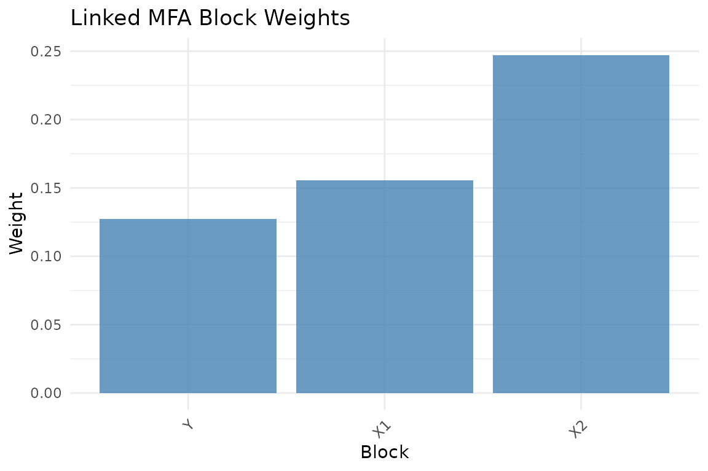
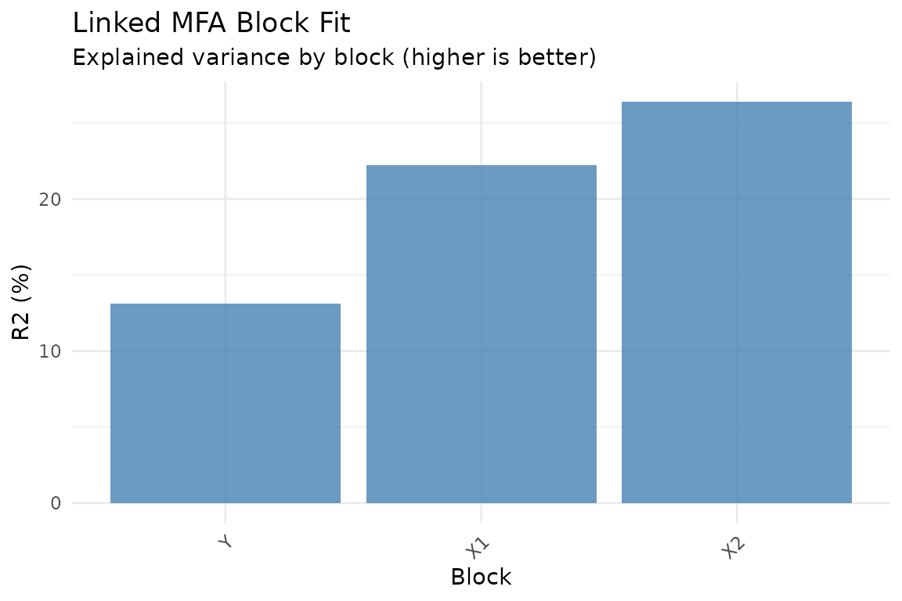
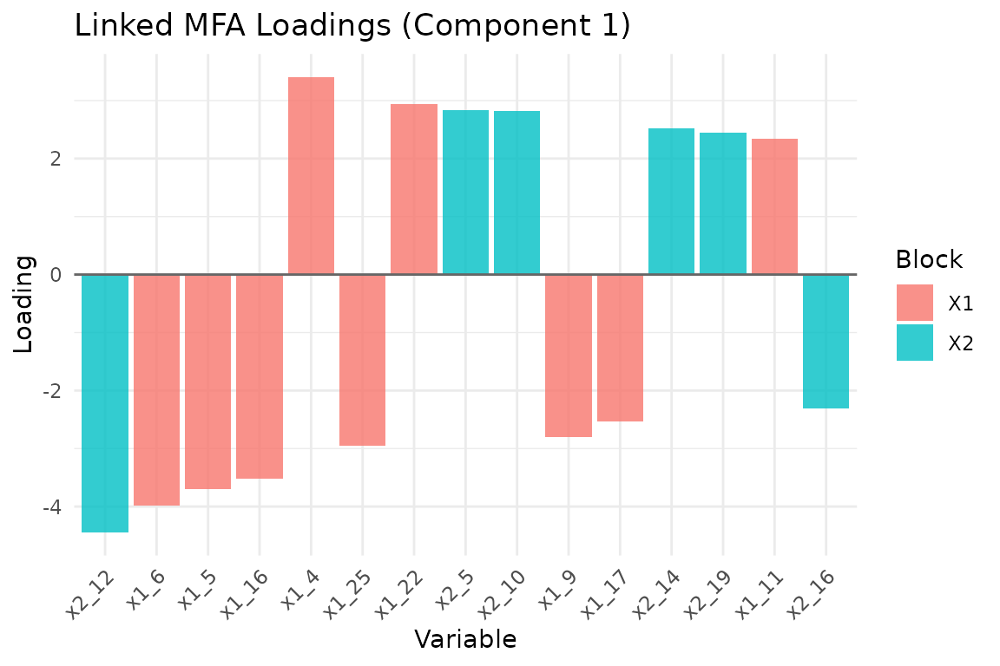

Why Anchored MFA?
Standard MFA requires all blocks to share the same observations. This is often unrealistic. Consider neuroimaging: you have a reference dataset (Y) with structural measures on N subjects, but your auxiliary data — task fMRI, resting-state, behavioral assessments — are available for overlapping but different subsets of those subjects. Some subjects completed one scan, others completed two, and the overlap varies by modality.
Anchored MFA solves this. It learns a shared score matrix for the reference observations while allowing each auxiliary block to have its own row structure. You simply specify which rows of each auxiliary block correspond to which rows of the reference.
Naming note:
anchored_mfa()is the primary function.linked_mfa()is retained as a convenience alias.
Quick start
We create a reference block with 80 subjects and two auxiliary blocks measured on overlapping subsets. All three share the same underlying latent structure so the model has real signal to recover.
# Reference block: all 80 subjects
dim(Y)
#> [1] 80 20
# Auxiliary blocks: overlapping subsets
dim(X1) # 50 subjects
#> [1] 50 30
dim(X2) # 40 subjects
#> [1] 40 25
# How many subjects overlap between auxiliary blocks?
length(intersect(idx1, idx2))
#> [1] 22
fit <- anchored_mfa(
Y = Y,
X = list(X1 = X1, X2 = X2),
row_index = list(X1 = idx1, X2 = idx2),
ncomp = 3
)
# Scores are defined for all N reference subjects
S <- scores(fit)
dim(S)
#> [1] 80 3
Observations in the Anchored MFA shared score space, colored by block coverage. Darker points have more data sources informing their position.
The score plot colors observations by how many blocks contribute to their position. Subjects measured across more modalities have more information constraining their scores.
The model
Anchored MFA fits the structure:
where:
- Y is the reference block (N x q)
- S is the shared score matrix (N x K)
- B contains the loadings for Y
- Each X_k is an auxiliary block with its own dimensions
- V_k contains the loadings for block k
- idx_k maps rows of X_k to rows of Y
The key insight: scores S live in the reference space (N rows), but each auxiliary block contributes information through its row mapping.
Row index mapping
The row_index argument is the core of Anchored MFA. Each
element maps rows of an auxiliary block to rows of the reference Y:
# row_index[[k]][i] says:
# "row i of X[[k]] corresponds to row row_index[[k]][i] of Y"
# Subset data: 60 of 100 subjects have this modality
idx <- sample.int(100, 60, replace = FALSE)
# Repeated measures: subject 1 measured 3 times, subject 2 twice
idx_repeated <- c(rep(1L, 3), rep(2L, 2), 3L)This flexibility handles subset data, repeated measures, and unbalanced designs.
Working with the results
The returned object behaves like a standard
multiblock_biprojector:
# Global scores (N x ncomp)
dim(scores(fit))
#> [1] 80 3
# Block-specific loadings
dim(fit$B) # Y loadings
#> [1] 20 3
sapply(fit$V_list, dim) # X_k loadings
#> X1 X2
#> [1,] 30 25
#> [2,] 3 3
# Block indices in concatenated space
str(fit$block_indices)
#> List of 3
#> $ Y : int [1:20] 1 2 3 4 5 6 7 8 9 10 ...
#> $ X1: int [1:30] 21 22 23 24 25 26 27 28 29 30 ...
#> $ X2: int [1:25] 51 52 53 54 55 56 57 58 59 60 ...Convergence diagnostics
Anchored MFA uses alternating least squares (ALS). Monitor convergence to ensure the algorithm has settled:
plot_convergence(fit)
Convergence trace of the ALS objective. A healthy trace decreases monotonically and flattens near the solution.
Visualization
Block coverage
The coverage heatmap shows which observations are present in which blocks — essential for understanding your data’s overlap structure:
plot_coverage(fit)
Coverage heatmap: rows are observations, columns are blocks. Filled cells indicate presence.
Score plot with coverage
Color observations by how many blocks contribute to their scores:
autoplot(fit, color = "coverage")
Score plot colored by block coverage. Observations with more contributing blocks have richer information.
Partial factor scores
Compare how each block “sees” the observations:
plot_partial_scores(fit, show_consensus = TRUE)
Partial factor scores. Open circles mark the consensus position in S; colored points show each block’s view.
Block weights and fit
plot_block_weights(fit)
Block normalization weights.
plot_block_fit(fit)
Relative reconstruction quality per block. Higher R-squared means the model captures more of that block’s variance.
Held-out prediction and validation
Anchored MFA is often used because you want to predict rows of the
reference block Y from an auxiliary modality. That makes
held-out validation part of the core workflow, not an optional
afterthought.
Projecting new rows from a known block back into the reference space
uses predict(..., type = "response"):
pred_x1 <- predict(fit, X1[1:5, , drop = FALSE], block = "X1", type = "response")
truth_x1 <- Y[idx1[1:5], , drop = FALSE]
stopifnot(identical(dim(pred_x1), dim(truth_x1)))
stopifnot(all(is.finite(pred_x1)))
round(cbind(pred_x1[1, 1:3], truth_x1[1, 1:3]), 3)
#> [,1] [,2]
#> y1 0.035 0.173
#> y2 0.091 -0.160
#> y3 0.152 0.474For a simple held-out assessment, compute response-prediction metrics directly:
performance_metrics(
task = "response_prediction",
truth = truth_x1,
estimate = pred_x1,
metrics = c("mse", "mean_cosine_similarity")
)
#> # A tibble: 1 × 2
#> mse mean_cosine_similarity
#> <dbl> <dbl>
#> 1 0.0393 0.189Cross-validation scales that idea to repeated folds with synchronized holdout across blocks:
d1 <- multidesign::multidesign(X1, data.frame(anchor = idx1, Y[idx1, , drop = FALSE]))
d2 <- multidesign::multidesign(X2, data.frame(anchor = idx2, Y[idx2, , drop = FALSE]))
hd <- multidesign::hyperdesign(list(X1 = d1, X2 = d2), block_names = c("X1", "X2"))
folds <- multidesign::cv_rows(
hd,
rows = list(
list(X1 = 1:3, X2 = 1:3),
list(X1 = 4:6, X2 = 4:6)
),
preserve_row_ids = TRUE
)
res_cv <- cv_muscal(
folds = folds,
fit_fn = function(analysis) {
X_blocks <- multidesign::xdata(analysis)
idx_blocks <- lapply(multidesign::design(analysis), function(des) des$anchor)
anchored_mfa(Y = Y, X = X_blocks, row_index = idx_blocks, ncomp = 3)
},
estimate_fn = function(model, assessment) {
X_blocks <- multidesign::xdata(assessment)
do.call(rbind, lapply(names(X_blocks), function(block_name) {
predict(model, X_blocks[[block_name]], block = block_name, type = "response")
}))
},
truth_fn = function(assessment) {
des_blocks <- multidesign::design(assessment)
do.call(rbind, lapply(des_blocks, function(des) {
as.matrix(des[, colnames(Y), drop = FALSE])
}))
},
task = "response_prediction",
metrics = c("mse", "mean_cosine_similarity")
)
res_cv$scores
#> # A tibble: 2 × 3
#> mse mean_cosine_similarity .fold
#> <dbl> <dbl> <int>
#> 1 0.0418 -0.104 1
#> 2 0.0378 0.00714 2
stopifnot(all(is.finite(res_cv$scores$mse)))
stopifnot(all(is.finite(res_cv$scores$mean_cosine_similarity)))Because anchored_mfa() stores generic refit metadata,
you can also use infer_muscal() for bootstrap or
permutation summaries. The shared workflow is shown in
vignette("model_evaluation").
Variable loadings
plot_loadings(fit, type = "bar", component = 1, top_n = 15)
Top 15 variable loadings on component 1, colored by block.
Block normalization
Like standard MFA, Anchored MFA supports block weighting:
-
"MFA"(default): Inverse squared first singular value -
"None": Uniform weights -
"custom": User-supplied weights viaalpha
# Custom weights: emphasize the reference block
fit_custom <- anchored_mfa(
Y = Y,
X = list(X1 = X1, X2 = X2),
row_index = list(X1 = idx1, X2 = idx2),
ncomp = 3,
normalization = "custom",
alpha = c(2, 1, 1) # Y weight, X1 weight, X2 weight
)Feature similarity prior
When auxiliary blocks measure conceptually similar features — say, the same brain regions across different tasks — you may want corresponding features to have similar loadings. Anchored MFA supports this via a feature grouping prior.
# Automatic grouping: features with the same column name are grouped
fit_grouped <- anchored_mfa(
Y = Y,
X = list(X1 = X1, X2 = X2),
row_index = list(X1 = idx1, X2 = idx2),
ncomp = 3,
feature_groups = "colnames",
feature_lambda = 0.1
)
# Manual grouping via data frame
groups_df <- data.frame(
block = c("X1", "X1", "X2", "X2"),
feature = c(1, 5, 1, 3),
group = c("ROI_A", "ROI_B", "ROI_A", "ROI_B"),
weight = c(1, 1, 1, 1)
)
fit_grouped <- anchored_mfa(
Y = Y,
X = list(X1 = X1, X2 = X2),
row_index = list(X1 = idx1, X2 = idx2),
ncomp = 3,
feature_groups = groups_df,
feature_lambda = 0.5
)The feature_lambda parameter controls the strength of
the prior. Higher values pull grouped features toward their shared
center more strongly. Use plot_feature_groups() to
visualize the alignment.
When to use Anchored MFA
Anchored MFA is appropriate when:
- You have a reference dataset with complete observations
- Auxiliary datasets are measured on overlapping but incomplete subsets
- You want to learn a shared representation in the reference space
- Features across blocks may have conceptual correspondence
Anchored MFA is not appropriate when:
- All blocks share identical observations (use
mfa()instead) - There is no natural reference block
- Block relationships are better captured by other methods (e.g., CCA for two blocks with different row and column spaces)
Next steps
-
vignette("mfa")— Standard MFA when all blocks share observations -
vignette("model_evaluation")— Generic inference and held-out validation workflows -
?covstatis— STATIS analysis for covariance matrices -
?penalized_mfa— MFA with sparsity penalties
References
Anchored MFA extends the classical MFA framework to handle heterogeneous row structures. The algorithm is based on weighted alternating least squares with an optional quadratic group-shrinkage penalty on loadings.
Escofier, B., & Pagès, J. (1994). Multiple factor analysis (AFMULT package). Computational Statistics & Data Analysis, 18(1), 121-140.